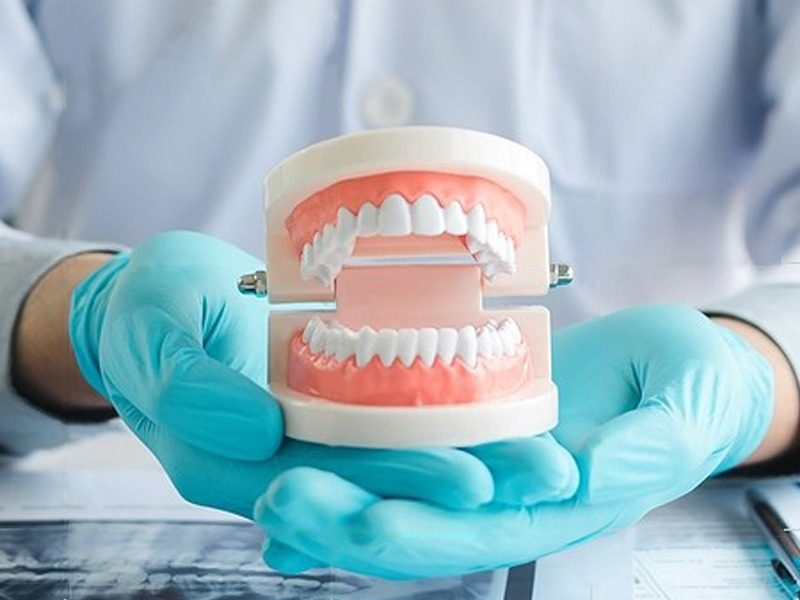

Somos una institución comprometida con el bienestar de la comunidad, abordamos la salud de las personas equilibrando nuestra experticia y empatía con el fin de atender a nuestros pacientes.
Nuestra pasión es transmitir confianza y seguridad a nuestro público a través de una actitud positiva, con un servicio eficiente y hospitalario. Entendemos que una condición médica no debe definir el estilo de vida de nuestros pacientes y queremos presentar alternativas para la prevención, sanación y desarrollo integral de la comunidad.

El ginecólogo y obstetra José Martínez Dupuy realiza controles prenatales, ginecológicos, de embarazos de alto riesgo, citologías vaginales, colposcopias y más. De Lunes a Viernes a partir de las 8:00 AM hasta las 12:00 PM, desde 10$ a 20$ la consulta ginecológica. Tambien se aceptan bolívares.
De la mano de José Luis Vilchez, te ofrecemos la revisión y el diagnóstico completamente gratis, mientras que la limpieza dental está a un precio de 10$ (O en bolívares también); junto a un 20% de descuento en cirugías simples, ortodoncias y Odontología Estética. Se atiende los Lunes, Miércoles y Viernes de 8:00 AM a 12:00 PM.
La alimentación es la clave fundamental para mantener el peso ideal y una vida saludable. La nutricionista Marvella Duque ofrece su programa de nutrición, agenda tu cita con ella por tan sólo 20$. Se acepta también en bolívares al cambio del día. Los horarios laborales son vespertinos, a partir de las 2:00 PM hasta las 6:00 PM.
Contacto: 0414-6813477
Contacto: 0424-6628953
Contacto: 0414-6434490
La Clínica San José fue fundada el 23 de Abril de 1984 por el Doctor José Martínez Dupuy al lado de la farmacia del mismo nombre frente a la Gran Parada del Barrio San José. Inicialmente, funcionó sólo como consultorio médico en medicina general que atendía a la población de niños, adultos y control de embarazos, estimando un promedio de 10 a 12 pacientes diarios. Posteriormente incrementó de popularidad hasta al punto que cambió de sede el 19 de Noviembre de 1989; ocupando su dirección actual. En la actualidad se atienden aproximadamente 35 pacientes diarios entre todas las especialidades en horario correspondido de 7 AM a 5 PM.